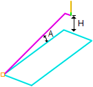

The following Entry/Exit tab allows you to define the engage and retract parameters for the current 2 or 3 Axis operations listed below. You can set Approach and Engage Motions for both Entry and Exit as well as at Each Level via this tab of the operation dialog. Refer to each option below.
Hole Profiling, 2 Axis Horizontal Finishing, 3 Axis Steeps Z (Horizontal Hill) Finishing, 3 Axis |
Dialog Box: Entry/Exit tab, 2½ Axis Milling operations |
You can set different feeds for plunge, approach, engage, cut, retract and depart moves. The tool moves to the position above the approach point with a plunge feed, then uses the approach feed rate for the vertical approach motion and engage feed rate for the engage motion. Lines & Arcs This is a 2D entry motion consisting of an Approach Motion and an Engage Motion. For the Approach Motion, enter the approach Length (L). Then, depending on the stock material and cut pattern select the approach angle as either Normal, Tangent or Specify Angle (A) with respect to the stock. For the Engage Motion select Linear or Radial. In the Linear motion the cutter follows a linear ramp motion, Ramping back and forth from a user specified height to the engage point. The Length (L) of this move, as well as the Angle (A) of this motion can be specified.
Along Path The Entry path can be defined as a 3D Entry along a specified Along Path Angle (A) with a Along Path Height (H). Ramp height is set automatically between cut levels if you set a ramp height smaller than the height from the previous level to the current level.  Along Path None No entry motion is defined for the current operation. None |
The Exit motion consists of a Retract Motion followed by a Departure Motion. The departure motion is a linear motion. Lines & Arcs
For the Departure Motion, enter the departure Length (L). Then, depending on the stock material and cut pattern select the departure angle as either Normal, Tangent or Specify Angle (A) with respect to the stock. None None |
Apply entry/exit at each cut level Check this box to apply the Entry/Exit Motions defined on this dialog to each cut level on the operation. Overlap Dist for Closed Profiles Enter the Overlap Distance for closed profiles. The tool will continue past the start point for the specified distance. The distance is restricted not to exceed the length of the control geometry. Overlap Distance |